复习与关联
这个学期学了大数、乘法、数量关系、角和四边形、统计图和方向。这一课先把它们连成一张知识结构图。然后用古代的数学趣题“鸡兔同笼”和“百僧百馍”挑战一下自己。
学完本课，你能够：
01整理复习：画知识结构图
先说结论：知识结构图把学过的知识按类别连起来。教材把本学期的知识分成五块。它们是：数与运算、数量关系、图形的认识与测量、数据的收集整理与表达、认识方向。
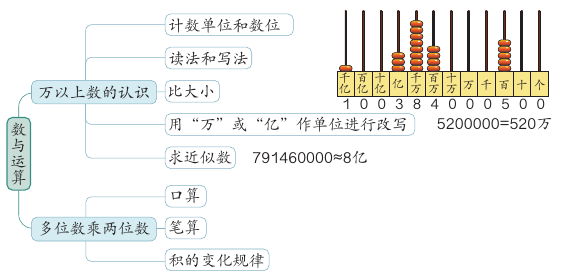
教材请你也来整理一下。下面这张图按教材第 108–111 页的结构画好了。点任意一个知识点，看它的例子和它在哪一课。
分类和知识点照教材第 108–111 页的知识结构图；例子取自教材，课程链接是本课程的课号。
02数与运算
先说结论：认识大数，核心还是数位顺序表；笔算乘法，核心是“用一个乘数每一位上的数去乘另一个乘数”。
回顾：万以上数的认识
教材第 108 页的数位顺序表里写着一个数：60174690000。两位同学提出了问题：
- 数位顺序表中的这个数中的两个“6”分别表示……
- 把这个数改写成用“万”作单位的数是……省略亿位后面的尾数，求近似数是……
用下面的大数小助手回答这些问题。点表格里的数字，看它表示多少。
读法用课程共用的读数程序，按教材的读数规则生成。整万、整亿的数用“=”改写；其他数用“四舍五入”法求近似数，用“≈”连接。
回顾：多位数乘两位数
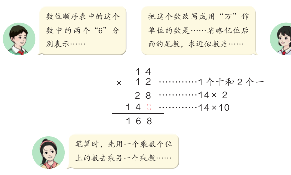
12 是 1 个十和 2 个一。所以先算 14 × 2 = 28，再算 14 × 10 = 140，最后 28 + 140 = 168。第二行的 14 写在十位上，末尾的 0 可以不写。
- 34 × 21，写成 764。第一行应该是 34 × 1 = 34，竖式里写成了 84。所以和也错了。正确结果是 34 + 680 = 714。
- 143 × 26，写成 3508。第一行应该是 143 × 6 = 858。竖式里写成 648：4 × 6 = 24 时忘了加上个位进的 1，1 × 6 时又忘了加上进的 2。正确结果是 858 + 2860 = 3718。
03数量关系
先说结论：本学期总结了三个常见的数量关系。一个是加法模型，两个是乘法模型。
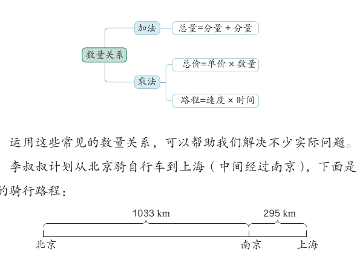
教材用李叔叔的骑行计划说明怎样选数量关系。北京到南京 1033 km，南京到上海 295 km。
| 问题 | 用哪个数量关系 | 怎样算 |
|---|---|---|
| （1）北京到上海一共多少千米？ | 总量 = 分量 + 分量 | 1033 + 295 = 1328（km） |
| （2）每天骑 115 千米，15 天后能到上海吗？ | 路程 = 速度 × 时间 | 115 × 15 = 1725（km），1725 > 1328，能到达 |
| （3）4 袋面包（每袋 15 元）和 1 包矿泉水（36 元），一共多少钱？ | 先用 总价 = 单价 × 数量，再用 总量 = 分量 + 分量 | 15 × 4 = 60（元），60 + 36 = 96（元） |
04图形的认识与测量
先说结论：这学期从“线”“角”“四边形”三个方面研究了图形。研究图形时，要从边和角两个方面看。
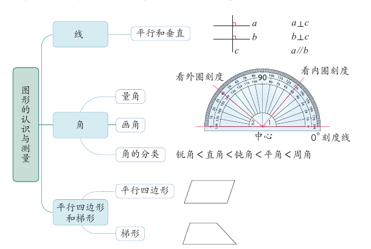
- 线：a ⊥ c，b ⊥ c，所以 a // b。见 L04。
- 角：量角时，量角器的中心和角的顶点重合，0° 刻度线和角的一条边重合。0° 刻度线在哪一圈，就看哪一圈的刻度。见 L03。
- 角的分类：锐角 < 直角 < 钝角 < 平角 < 周角。
- 平行四边形和梯形：见 L05。
教材里的同学说：“我从边和角两个方面研究了图形的特点，了解了图形之间的关系。”应用提升第 3 题请你用一张表整理正方形、长方形、平行四边形和梯形。表里第一行已经填好：
| 四边形 | 四边相等 | 两组对边分别相等 | 只有一组对边平行 | 两组对边分别平行 | 有四个直角 |
|---|---|---|---|---|---|
| 正方形 | ✓ | ✓ | ✓ | ✓ | |
| 长方形 | ？ | ？ | ？ | ？ | ？ |
| 平行四边形 | ？ | ？ | ？ | ？ | ？ |
| 梯形 | ？ | ？ | ？ | ？ | ？ |
05统计与方向
先说结论：用条形统计图表示数据，可以更清楚地看出数量的多少。辨认方向可以借助太阳、指南针，还可以看平面图。
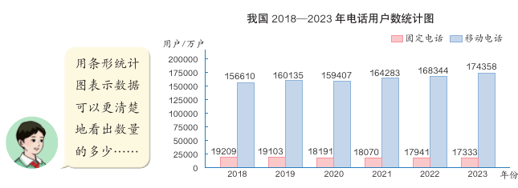
从图里能读出很多信息。例如：移动电话用户从 2018 年的 156610 万户，增加到 2023 年的 174358 万户；固定电话用户从 19209 万户，减少到 17333 万户。每一年，移动电话用户都比固定电话用户多得多。条形统计图的读法和画法见 L09。
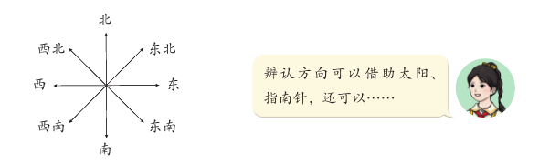
应用提升第 4 题：动物园导游图
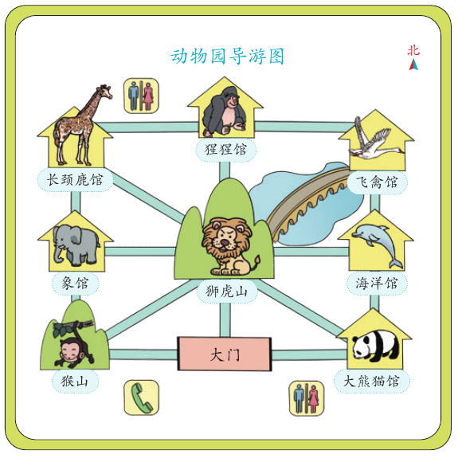
小丽说：“我先向东走去看大熊猫，然后我想去看猩猩，可以怎么走呢？”小红说：“长颈鹿馆在西北角。去长颈鹿馆，可以先向北走到狮虎山，再向西北走；也可以……”
按教材第 113 页导游图重绘，只保留场馆和道路。“走一段”是课程作者为了练方向设计的操作。
06数学广角：鸡兔同笼
先说结论：鸡兔同笼问题知道头的总数和脚的总数，要求鸡和兔各有几只。先从数量小的问题想办法，再解决原题。
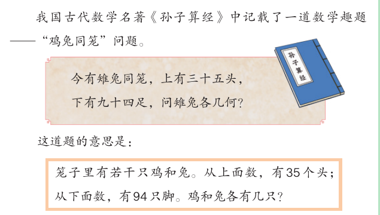
今有雉兔同笼，上有三十五头，下有九十四足，问雉兔各几何？教材第 118 页
这道题的意思是：笼子里有若干只鸡和兔。从上面数，有 35 个头；从下面数，有 94 只脚。鸡和兔各有几只？
尝试：先解决一个小问题
教材说：我们可以先从数量较小的问题来探索解决问题的方法。笼子里有若干只鸡和兔。从上面数，有 8 个头；从下面数，有 28 只脚。鸡和兔各有几只？
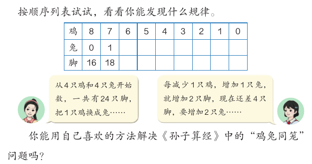
教材里的两位同学还发现了一个更快的办法：从 4 只鸡和 4 只兔开始数，一共有 24 只脚。每减少 1 只鸡、增加 1 只兔，就增加 2 只脚。现在还差 4 只脚，要增加 2 只兔……
图中画法照教材第 118 页。一个圆圈是头，两条线是鸡的脚，四条线是兔的脚，红线是刚添上的脚。35 个头时只画头和脚数，不逐只画。
反思：古人的方法
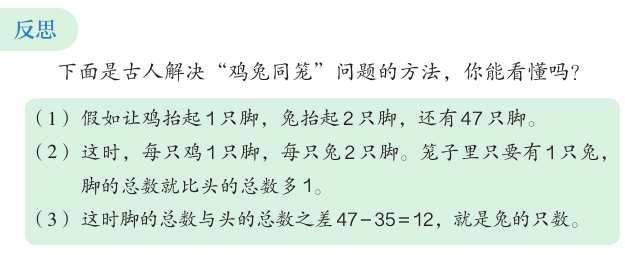
（1）假如让鸡抬起 1 只脚，兔抬起 2 只脚，还有 47 只脚。
（2）这时，每只鸡 1 只脚，每只兔 2 只脚。笼子里只要有 1 只兔，脚的总数就比头的总数多 1。
（3）这时脚的总数与头的总数之差 47 − 35 = 12，就是兔的只数。教材第 119 页
步骤照教材第 119 页“反思”。示意图只画 8 个头的情况，帮你看清“每只兔比每只鸡多 1 只脚”。
教材最后问：生活中还有类似“鸡兔同笼”的问题吗？比如，一共有几辆自行车和三轮车，知道车的总数和轮子的总数，求各有几辆。
07挑战自我：百僧百馍
先说结论：百僧百馍也是古代数学趣题。它和鸡兔同笼一样，可以用列表的方法试出来。
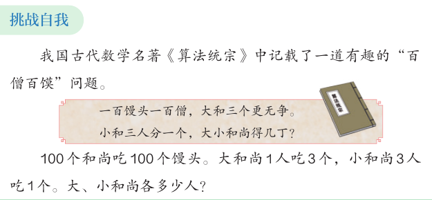
一百馒头一百僧，大和三个更无争。小和三人分一个，大小和尚得几丁？教材第 119 页
意思是：100 个和尚吃 100 个馒头。大和尚 1 人吃 3 个，小和尚 3 人吃 1 个。大、小和尚各多少人？
小和尚 3 人分 1 个馒头，所以小和尚的人数要是 3 的倍数，馒头才正好分完。表格只列出小和尚是 3 的倍数的情况。
08自测与速记
速记表
| 要点 | 一句话 |
|---|---|
| 知识结构图 | 数与运算、数量关系、图形的认识与测量、数据的收集整理与表达、认识方向 |
| 大数 | 先分级再读写；整万、整亿用“=”改写；求近似数用“四舍五入”，用“≈” |
| 笔算乘法 | 用一个乘数每一位上的数去乘另一个乘数，数位对齐，别忘进位 |
| 数量关系 | 总量 = 分量 + 分量；总价 = 单价 × 数量；路程 = 速度 × 时间 |
| 图形 | 从边和角两个方面研究；锐角 < 直角 < 钝角 < 平角 < 周角 |
| 鸡兔同笼 | 画图、列表（换 1 只鸡为兔，脚多 2 只）、抬脚法（脚数 ÷ 2 − 头数 = 兔数） |
| 百僧百馍 | 列表试一试；小和尚人数要是 3 的倍数 |
相关课程
教材：人教版《数学》四年级上册（2022 课标修订版）第七单元“复习与关联”第 108–120 页。标为“补充”的内容和模拟演示是课程作者的解释，不是教材原文。